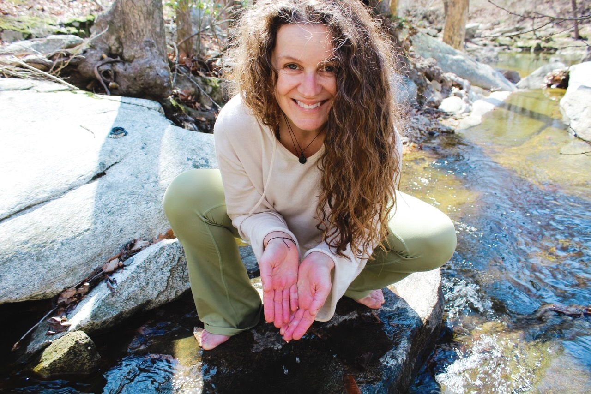
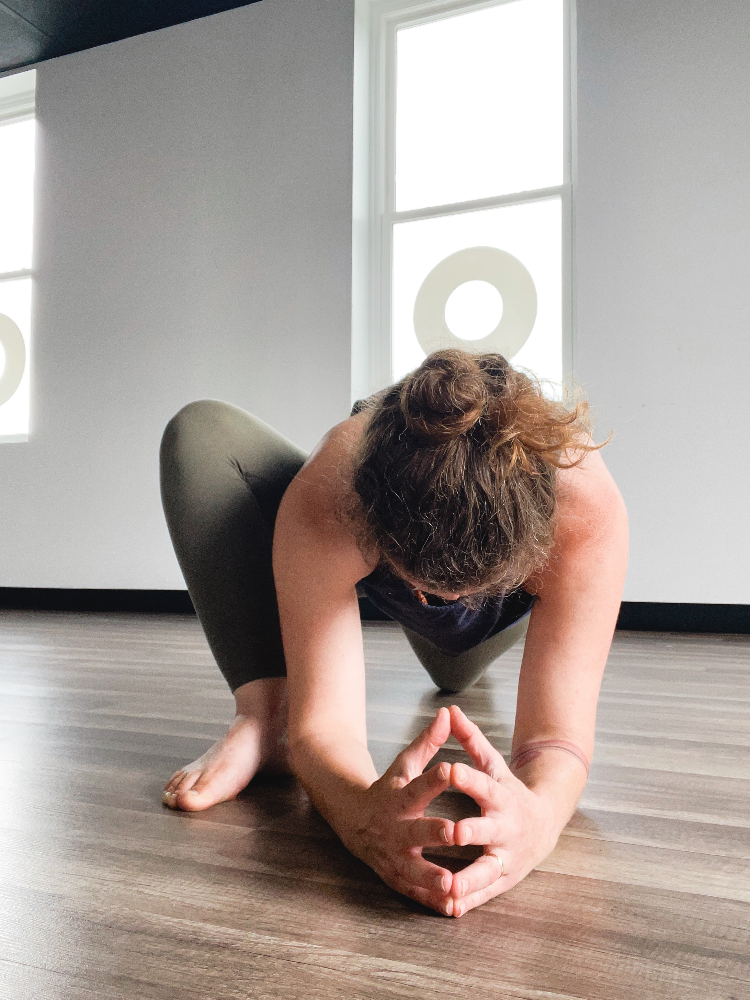
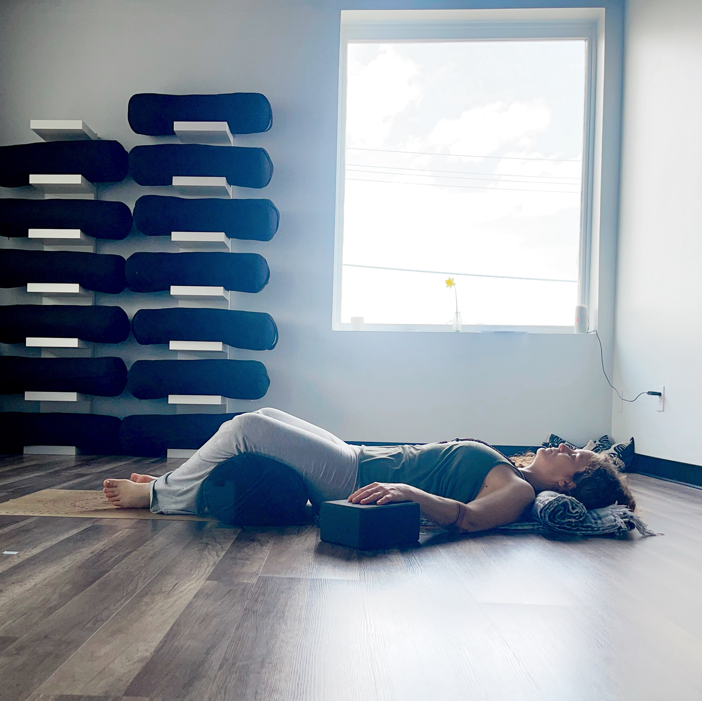
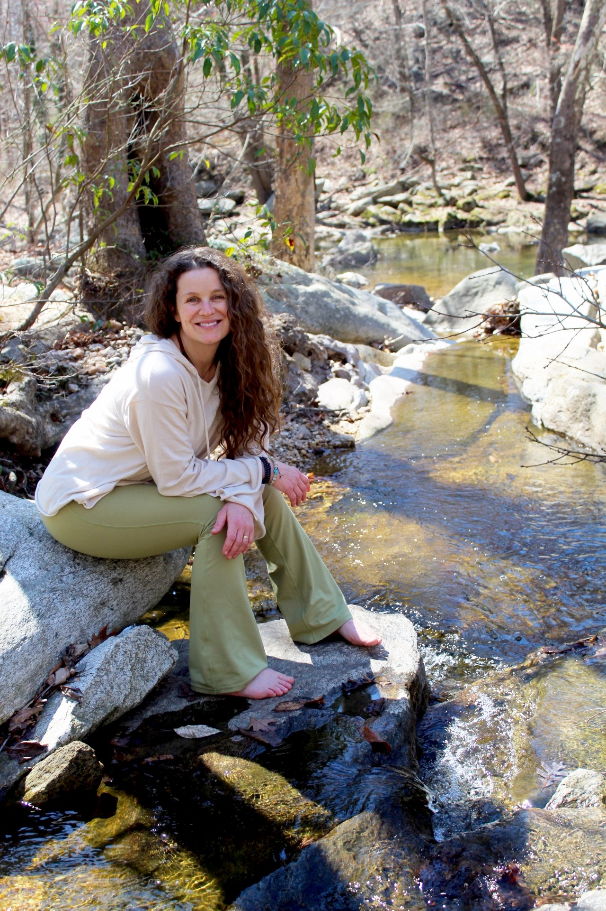

Steadying in an Unsteady World
You've tried a lot. Some things helped… for a while. Some didn't.
This isn't another workshop of tips and tools. It's a reflective, restorative experience that helps you finally understand what your body has been carrying — and what it actually needs now to begin feeling steadier.
"Working with Sarah helped me come back to myself — and back to my joy. I feel more open, more like me again."
— Laurel, after working with Sarah
Most women Sarah works with have already tried things. Maybe therapy. Maybe medication. Maybe a class or two. Hoping something would shift.
But it either didn't last… didn't feel right… or left them more confused about what to do next. So they're left wondering if there's something they're missing.
There usually is. And this gathering helps you find it.
You're not making it up. You're not weak. And you're not failing. Your body has been carrying something — and it's been doing it quietly, for a long time.
You wake up already anxious — before the day has even started
Life looks "fine" on the outside, but inside you feel worn down and on edge
You've tried therapy, meditation, breathwork — and still feel stuck
Your mind won't quiet at night, even when your body is completely exhausted
Everything feels like too much, and nothing seems to actually help
You feel like you're managing it — but not actually changing it
This isn't about finding another fix or pushing yourself to try harder. It's about understanding — for the first time — why it keeps happening, and what your system actually needs.
Why anxiety hits first thing in the morning — before your day even begins — and what you can actually do about it
Why the things you reach for help temporarily — but the stress and anxiety keep coming back
Why your mind won't slow down at night, even when your body is completely exhausted
A simple guided breathwork practice to settle the nervous system and create more steadiness
Why life starts feeling heavy, frustrating, or "too much" — even when you're trying so hard
What actually helps you feel calm, clear, steady, and present — not just temporarily, but as a foundation
How to begin helping your children regulate their nervous systems too — so they grow up more grounded and resilient
A heartfelt invitation to continue deeper work, if that feels aligned — no pressure, ever
Ready to understand what your body has been carrying — and what it actually needs?

Looking back, anxiety had been my baseline for most of my life. I didn't realize anything was "wrong" — I thought this was simply how everyone experienced the world. Always bracing. Always thinking. Always carrying tension underneath.
It wasn't until I started trying to heal a difficult relationship that something unexpected happened: my anxiety started lowering as a byproduct. And that's when I realized — life did not have to feel this hard.
What changed everything wasn't more tools. It was understanding what was actually happening behind the scenes — physiologically, not just mentally. I founded Sattva Rising to help women find that same steadiness.
Because it's usually not about trying more things. It's about understanding what actually helps — and why.
Most people try to manage anxiety from the outside in. This work goes the other direction — helping the body learn that it's safe, and updating the patterns underneath.
Your system is on high alert — even when nothing is wrong. This step is about helping your body feel safe again, so it can stop overreacting to everyday life. We cannot rewire while the body feels under attack.
You begin to feel calmer without having to fight for it.
There are patterns underneath your anxiety — experiences the body stored, meanings it attached, protective reactions it learned. Until those patterns shift in the body, the system keeps reacting the same way.
Things that once triggered you start to lose their grip.
This isn't about doing it perfectly. It's about having a simple, supported way to stay on track — especially when old patterns return. With support, setbacks become part of the rewiring. Without it, they become proof you "can't change."
You stop starting over and actually move forward.

"I felt lost, disconnected, and stuck in patterns I couldn't seem to change. I now move through life with clarity, intention, and a deep sense of purpose. I've found peace where there used to be anxiety."
— Amanda
These aren't polished reviews. They're real words, from real conversations, with women who came in feeling exactly what you might be feeling right now.
`I was a plumb mess at this time last year.
I feel like I've completely transformed.
"Before working with Sarah, I felt lost — disconnected from who I was, unsure of my purpose, and stuck in patterns that no longer served me."
— Amanda"Before the program I was in a winter and life rut, wanting a change. I was feeling disconnected from myself and others, with high anxiety and mental fog."
— Lisa D."Before working with Sarah, I felt stuck — like I was spinning my wheels in both my personal and professional life. I was experiencing real burnout."
— Harper"The biggest breakthrough for me was realizing that I am worthy and that my needs matter. I now stand up for myself, feel more in control, and experience a deeper sense of happiness and self-worth."
— KarenOn reconnecting with joy
"Sarah led me back to myself and my joy. I grew out of a terribly frustrating and even agonizing stuck place into an arms-wide-open, heart-bared freedom of expression."
— LaurelOn self-discovery
"From the very beginning, Sarah gently supported me through a journey of self-discovery unlike anything I've experienced in past therapeutic settings. This experience has been invaluable."
— ValOn finding peace
"I now move through life with clarity, intention, and a deep sense of purpose. I've found peace where there used to be anxiety, and confidence where there used to be fear."
— AmandaOn releasing the heaviness
"Through our work together, I was able to release the heaviness — both physically and emotionally — and reconnect with my own energy. I feel light, free, and able to move again."
— RaquelOn daily tools that stick
"I walked away with tools and practices that have become part of my daily routine. With her support, I was able to ease my burnout and reconnect with my passions."
— HarperOn small actions, big shifts
"What surprised me most was how powerful the small daily actions were. Journaling, identifying what is important to me, and choosing three meaningful areas to focus on each day completely shifted my outlook."
— Karen"I'm now meditating regularly, more mindful of what I put in and on my body, and more intentional about the energy I consume. The seeds Sarah planted are now sprouting."
— Lisa D."You don't need fixing. Because you're not broken. Your system may simply need something different — and more supportive — to finally soften."

This gathering includes guided inquiry, mindful awareness, and a breathwork practice designed to settle the nervous system — and help you feel the difference in your body.
It's a supportive space to make sense of what you've been living with, without pressure to fix or change yourself. Come as you are.
And since we keep the group intentionally small, there's space for real conversation — this won't feel like a webinar.
The world may remain unpredictable.
But your system doesn't have to stay on edge.
And learning to steady yourself
is how you begin returning to yourself again.
Free virtual gathering · Thursday, May 28
No pitch. No pressure. A heartfelt invitation only if it feels aligned.